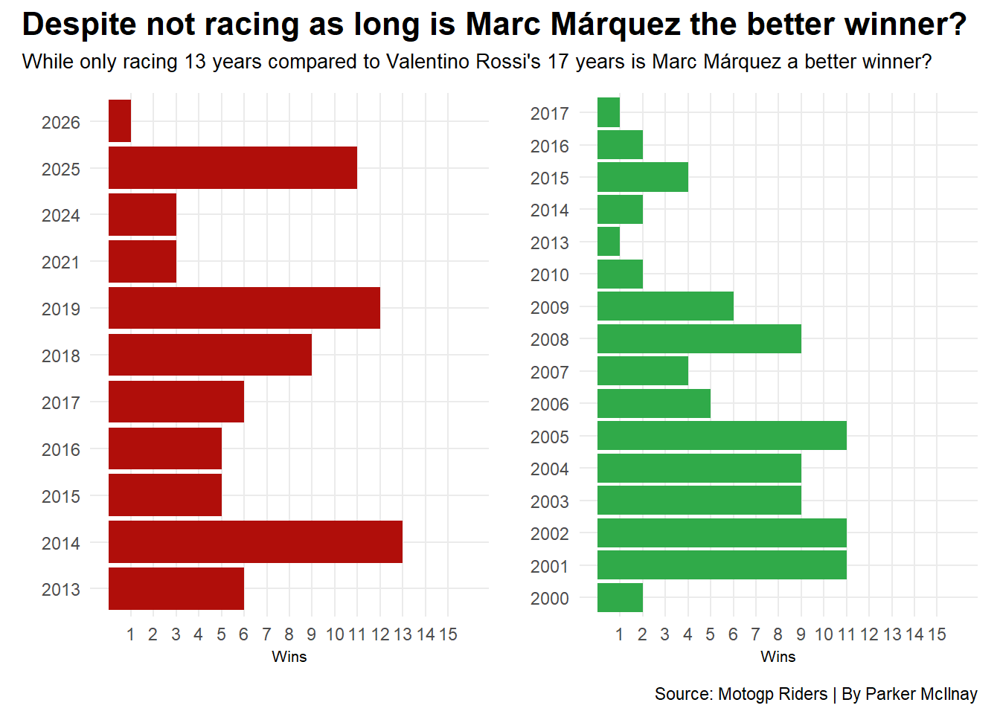
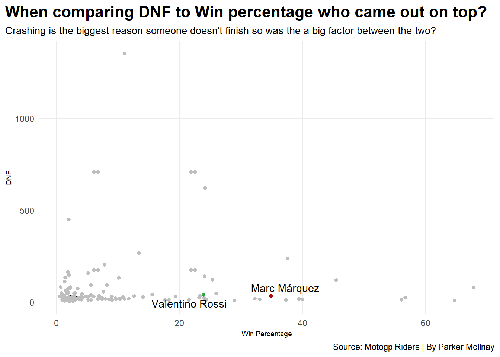

Code
library(tidyverse)
library(patchwork)
library(gt)
library(ggbeeswarm)
library(ggrepel)Parker McIlnay
April 24, 2026
Fans have been debating for a long time now whether Valentino Rossi is the best or if Marc Márquez is the best racer of all time.
Valentino Rossi is regarded as the greatest racer of all time, while Marc Márquez is considered a trailblazer for his aggressive riding style that helped change the racing style into what it is today. There is no clear answer when you ask around; some people say Rossi is the greatest, while others say that Márquez is the greatest. This data is going to help clear up this debate.
When looking at the data, there are many ways to go about comparing two people. Wins are the first thing to look at when comparing people’s careers. How long did they race? How many wins did they have? How many races did they compete in? For this first chart, I decided to just compare overall wins in their careers.
raceclass <- read_csv("motogp_2025_race_classifications.csv")
season <- read_csv("motogp_2025_season_results.csv")
records <- read_csv("motogp_records_2025.csv")
marc <- records |>
filter(stat_name == "Wins in a season") |>
filter(name == "Marc Márquez")
rossi <- records |>
filter(stat_name == "Wins in a season") |>
filter(name == "Valentino Rossi")
bar1 <- ggplot() +
geom_bar(data=marc, aes(x=years, weight=value), fill="#B00E0A") +
coord_flip() +
scale_y_continuous(breaks = c(1,2,3,4,5,6,7,8,9,10,11,12,13,14,15), limits=c(0,16)) +
labs(
x="",
y="Wins"
) +
theme_minimal()
bar2 <- ggplot() +
geom_bar(data=rossi, aes(x=years, weight=value), fill="#30AA49") +
coord_flip() +
scale_y_continuous(breaks = c(1,2,3,4,5,6,7,8,9,10,11,12,13,14,15), limits=c(0,16)) +
labs(
x="",
y="Wins"
) +
theme_minimal()
bar1 + bar2 +
plot_annotation(
title = "Despite not racing as long is Marc Márquez the better winner?",
subtitle = "While only racing 13 years compared to Valentino Rossi's 17 years is Marc Márquez a better winner?",
caption = "Source: Motogp Riders | By Parker McIlnay"
) &
theme(
plot.title = element_text(size = 16, face = "bold"),
axis.title = element_text(size = 8),
plot.subtitle = element_text(size=10),
panel.grid.minor = element_blank()
) 
You can see here that Valentino Rossi has 87 wins total over the span of 17 years, while Marc Márquez has 74 wins over the last 13 years. The clear winner is Rossi, right? Well, he’s now retired while Márquez is still racing. Who knows how long he is going to keep racing, but if we compare the first 13 years of each rider’s career, Rossi has 80 wins in his first 13 years compared to Márquez’s 74.
Wins are not the only thing that matters when looking at someone’s career; you need all of the stats. Looking at this second chart, you can see what areas these two riders ranked 3rd and above on.
rrank <- records |>
filter(name == "Valentino Rossi") |>
filter(rank <= 3)
mrank <- records |>
filter(name == "Marc Márquez") |>
filter(rank <= 3)
ranked <- bind_rows(rrank, mrank)
ranked |>
select(name, rank, stat_name, value, years) |>
arrange(rank) |>
gt() |>
cols_label(
stat_name = "Stats",
name = "Name",
value = "Value",
years = "Years",
rank = "Rank"
) |>
tab_header(
title = "Even though Valentino Rossi is first in three categories do they matter more?",
subtitle = "Despite only being first in three categories to Marc's six categories, does his three matter more then the six?"
)|> tab_style(
style = cell_text(color = "black", weight = "bold", align = "left"),
locations = cells_title("title")
) |> tab_style(
style = cell_text(color = "black", align = "left"),
locations = cells_title("subtitle")
)|>
tab_source_note(
source_note = md("**By:** Parker McIlnay | **Source:** Motogp Riders")
)|>
tab_style(
locations = cells_column_labels(columns = everything()),
style = list(
cell_borders(sides = "bottom", weight = px(3)),
cell_text(weight = "bold", size=12)
)
) |>
opt_row_striping() |>
opt_table_lines("none")|>
tab_style(
style = list(
cell_fill(color = "#B00E0A"),
cell_text(color = "white")
),
locations = cells_body(
rows = value == "32")
) |>
opt_row_striping() |>
opt_table_lines("none")|>
tab_style(
style = list(
cell_fill(color = "#B00E0A"),
cell_text(color = "white")
),
locations = cells_body(
rows = value == "13")
) |>
opt_row_striping() |>
opt_table_lines("none")|>
tab_style(
style = list(
cell_fill(color = "#B00E0A"),
cell_text(color = "white")
),
locations = cells_body(
rows = value == "18")
) |>
opt_row_striping() |>
opt_table_lines("none")|>
tab_style(
style = list(
cell_fill(color = "#B00E0A"),
cell_text(color = "white")
),
locations = cells_body(
rows = value == "84")
) |>
opt_row_striping() |>
opt_table_lines("none")|>
tab_style(
style = list(
cell_fill(color = "#B00E0A"),
cell_text(color = "white")
),
locations = cells_body(
rows = years == "2025")
) |>
opt_row_striping() |>
opt_table_lines("none")|>
tab_style(
style = list(
cell_fill(color = "#B00E0A"),
cell_text(color = "white")
),
locations = cells_body(
rows = value == "76")
) |>
opt_row_striping() |>
opt_table_lines("none")|>
tab_style(
style = list(
cell_fill(color = "#30AA49"),
cell_text(color = "white")
),
locations = cells_body(
rows = value == "89")
) |>
opt_row_striping() |>
opt_table_lines("none")|>
tab_style(
style = list(
cell_fill(color = "#30AA49"),
cell_text(color = "white")
),
locations = cells_body(
rows = value == "372")
) |>
opt_row_striping() |>
opt_table_lines("none")|>
tab_style(
style = list(
cell_fill(color = "#30AA49"),
cell_text(color = "white")
),
locations = cells_body(
rows = value == "199")
)| Even though Valentino Rossi is first in three categories do they matter more? | ||||
| Despite only being first in three categories to Marc's six categories, does his three matter more then the six? | ||||
| Name | Rank | Stats | Value | Years |
|---|---|---|---|---|
| Valentino Rossi | 1 | Starts | 372 | 2000-2021 |
| Valentino Rossi | 1 | Wins | 89 | 2000-2010,2013-2017 |
| Valentino Rossi | 1 | Podiums | 199 | 2000-2020 |
| Marc Márquez | 1 | Hattricks | 32 | 2013-2019,2024,2025 |
| Marc Márquez | 1 | Wins in a season | 13 | 2014 |
| Marc Márquez | 1 | Podiums in a season | 18 | 2019 |
| Marc Márquez | 1 | Pole positions | 84 | 2013-2019,2022-2025 |
| Marc Márquez | 1 | Pole positions in a season | 16 | 2025 |
| Marc Márquez | 1 | Fastest laps | 76 | 2013-2021,2023-2026 |
| Valentino Rossi | 2 | Championships | 7 | 2001-2005,2008,2009 |
| Valentino Rossi | 2 | Hattricks | 23 | 2001-2005,2008,2009,2016 |
| Valentino Rossi | 2 | Podiums in a season | 16 | 2003 |
| Valentino Rossi | 2 | Podium streak | 23 | 2002-2004 |
| Valentino Rossi | 2 | Fastest laps | 75 | 2000-2016,2019 |
| Marc Márquez | 2 | Wins | 74 | 2013-2019,2021,2024-2026 |
| Marc Márquez | 2 | Podiums | 129 | 2013-2019,2021-2026 |
| Valentino Rossi | 3 | Podiums in a season | 16 | 2005 |
| Valentino Rossi | 3 | Pole positions | 55 | 2001-2010,2014-2016,2018 |
| Marc Márquez | 3 | Championships | 7 | 2013,2014,2016-2019,2025 |
| Marc Márquez | 3 | Wins in a season | 12 | 2019 |
| By: Parker McIlnay | Source: Motogp Riders | ||||
Valentino Rossi ranks 1st in Starts, Wins, and Podiums. Starts is how many races someone has competed in, wins is how many races someone has come in 1st, and podiums is how many times someone has placed 3rd or above. Valentino raced until 2021 despite not winning a race since 2017. He did place on the podium up until 2020. Marc Márquez is ranked 1st in hattricks, wins in a season, podiums in a season, pole positions, pole positions in a season, and fastest laps. Pole position is when a rider sets the fastest lap at a prior race and then gets to start in 1st place. While Márquez has more 1st place rankings, I don’t believe that these rankings are as important as wins and podiums. You can get the fastest lap in the race prior and still lose, you can get P1 (start first) and still lose, or crash. Starting isn’t important; it’s where you finish that matters.
Rossi is still looking like he’s the better racer, but there is one final thing we can compare to see who is the best. I want to look at the win percentage and DNF. DNF stands for Did Not Finish. There are many reasons as to why someone doesn’t finish the race, but the biggest reason someone does not finish is that they crashed. In the chart, they look like they are on the same line, which they basically are. Rossi has 39 DNF’s while Márquez has 32 DNF’s.
races <- records |>
filter(stat_name == "Starts") |>
filter(value > 30) |>
select(name, value) |>
rename(Starts = 2)
dnf <- records |>
filter(stat_name == "DNF" ) |>
select(name, value) |>
rename(DNF = 2)
winpct <- records |>
filter(stat_name == "Wins percentage") |>
select(name, value) |>
rename(WinPct = 2)
windnf <- races |> inner_join(winpct) |> inner_join(dnf)
vr <- windnf |>
filter(name == "Valentino Rossi")
mm <- windnf |>
filter(name == "Marc Márquez")
ggplot() +
geom_point(data=windnf, aes(x=WinPct, y=DNF)) +
geom_beeswarm(
data=windnf,
aes(x=WinPct, y=DNF), color="grey") +
geom_beeswarm(
data=vr,
aes(x=WinPct, y=DNF), color="#30AA49") +
geom_beeswarm(
data=mm,
aes(x=WinPct, y=DNF), color="#B00E0A") +
geom_text_repel(
data=vr,
aes(x=WinPct, y=DNF, label=name)) +
geom_text_repel(
data=mm,
aes(x=WinPct, y=DNF, label=name)) +
labs(
x="Win Percentage",
y="DNF",
title="When comparing DNF to Win percentage who came out on top?",
subtitle="Crashing is the biggest reason someone doesn't finish so was the a big factor between the two?",
caption="Source: Motogp Riders | By Parker McIlnay"
) +
theme_minimal() +
theme(
plot.title = element_text(size = 16, face = "bold"),
axis.title = element_text(size = 7),
plot.subtitle = element_text(size=10),
panel.grid.minor = element_blank(),
plot.title.position = "plot"
) 
Despite Rossi having more DNFs, he still has more wins overall, even in the same amount of time. The win percentage is where things start to look a little different, though. Over Rossi’s career, he has raced in more races than Márquez, so his win percentage is going to be lower; that’s just what happens when you have a lot of races under your belt. Marc Márquez has a win percentage of 34.91, but has raced in 160 fewer races than Rossi. Rossi has a win percentage of 23.92. This stat is the exact same as a baseball player’s batting average. The fewer games you’ve batted, the better your batting average could be. If you have one batted once and got a hit, you’re hitting 100%, but that doesn’t make you the best batter in the league. Rossi is more consistent over the years despite having a lower win percentage than Márquez.
While Márquez has an incredible career, I don’t believe he’s good enough to be considered greater than Valentino Rossi. Rossi has more wins; he ranks 1st in the stats that matter, and despite having a lower win percentage, he has overall shown he has had a greater career. I am not discrediting Márquez’s career; he has an amazing career and is going to be in the discussion for a long time as one of the greats, and maybe will beat out Rossi, but as of today, Rossi is the better racer.